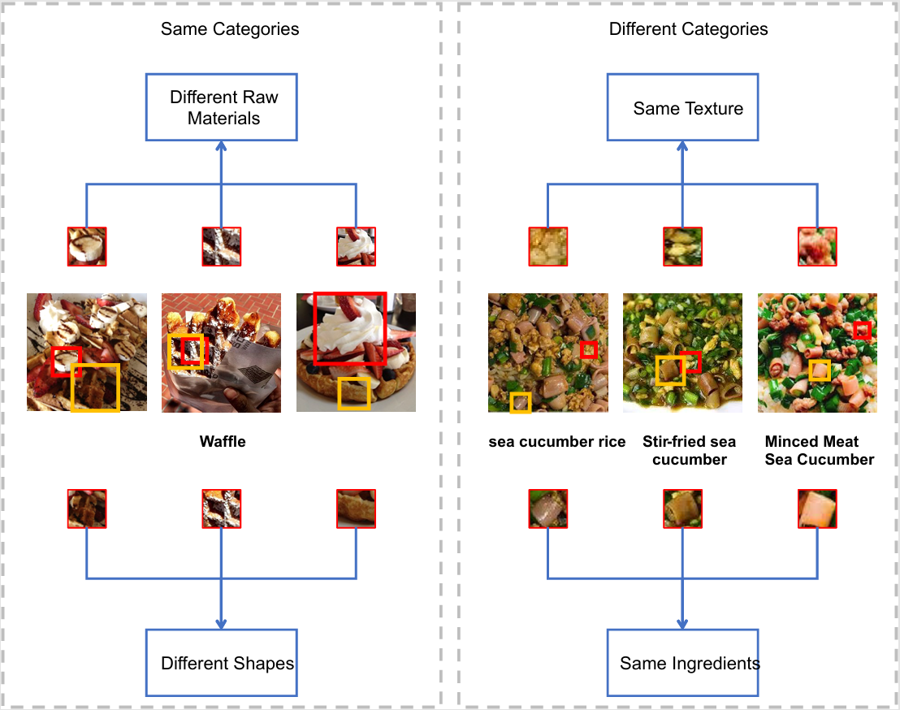

|
Congrui Lyu(lv)
I am a third-year undergraduate student majoring in Computer Science at Ludong University, and a member of the Intelligent Information Processing Laboratory (affiliated with the Key Laboratory of Intelligent Information Processing at the Institute of Computing Technology, Chinese Academy of Sciences), under the supervision of Prof. Guorui Sheng.
I have been involved in projects including robot soccer, Raspberry Pi intelligent hardware design, and Unity interactive prototyping.
Academic Email / Personal Email / CV / Github
Goal
Research Interests |

|
Honors
|
ResearchI explore how emotion-aware computing and human-AI interaction can shape healthier digital behaviors, designing systems that sense users' cognitive states and provide supportive, human-centered interventions. I also develop lightweight visual recognition models for food analysis, focusing on efficient architectures that are fast, accurate, and deployable on mobile and resource-constrained devices. |
|
ImpulseSense — Emotion-Aware Shopping Intervention (Seeking cooperation/guidance)
Congrui Lyu(Lv) 2025 github A Human–Computer Interaction prototype for detecting & moderating impulsive buying behavior. Digital well-being / affective computing / multimodal intervention for shopping. |
|
|


|
DPFA-Net: A Lightweight Hybrid Neural Network with Dual Path Feature Aggregation for Food Image Recognition
Xiangyi Zhu†, Wenli Zhang†, Yingnan Sheng†, Congrui Lv†, Guorui Sheng, Weiqing Min, Shuqiang Jiang, Multimedia Systems, 2025 github / PDF DPFA-Net is a lightweight dual-path food image recognition network that innovatively combines cross-patch local relations and efficient global modeling to achieve state-of-the-art accuracy on food datasets with minimal computation. |
|
NutriSnap
Congrui Lyu(Lv), Yunpeng Li, Xiangyu Li, 2025 github An Android food health app based on deep learning that supports real-time recognition of 221 types of food, and provides nutrition tracking, automatic calorie calculation and other features. An essential APP to help you live a healthy life. |
|
|
NoteBookAPP
Congrui Lyu(Lv) 2025 github A 2D notebook-style app built with Unity 2021.3.45f2c1. |
|
|
Football_Training_System
Congrui Lyu(Lv) 2025 github An intelligent football training system built on Raspberry Pi. It combines face recognition, ultrasonic distance measurement, goal detection, RGB LED/buzzer feedback, and supports real-time data reporting with Web/GUI displays. |
|
|
RoboCup 3D Soccer Agent
Congrui Lyu(Lv) 2025 github This project is a fully functional, strategy-optimized RoboCup 3D simulation team that achieves significant performance enhancement through innovative design of core tactical modules built upon a foundational framework. |


Miscellanea |
Teaching |
Taught LEGO Technic to children in rural areas, Aug. 2024 |
{kind=link}